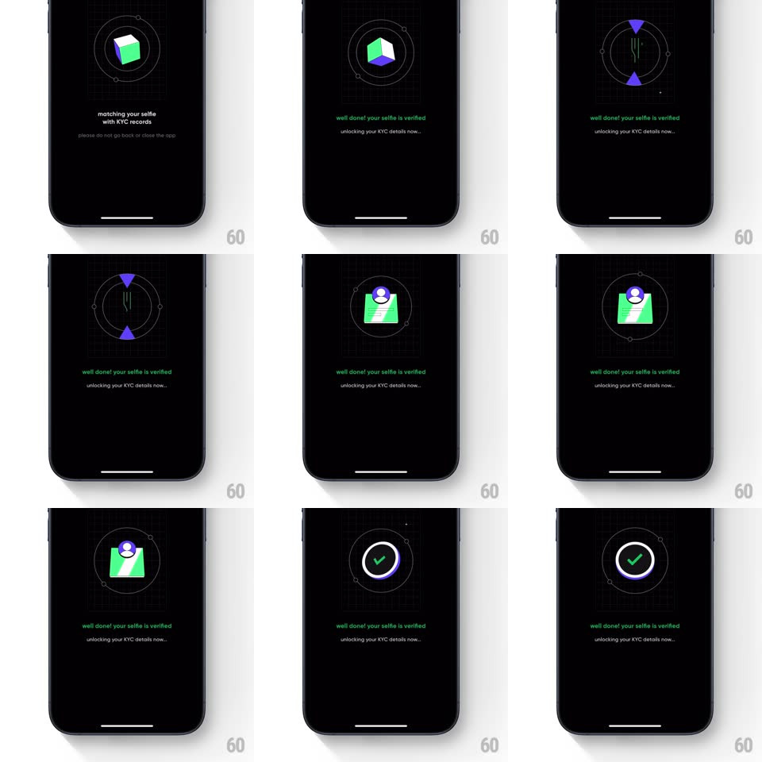

Media
Frame-by-frame

Rebuild this interaction 1:1: CRED's KYC verification sequence - on a black screen, a 3D gem tumbles inside a dashed orbital ring while "matching your selfie with KYC records" shows below, the copy switches to green "well done! your selfie is verified" with sparkles, the illustration morphs to an ID card with a rotating scan arc, then everything resolves into a white ring that draws a green check.

Rebuild this interaction 1:1: CRED's KYC verification sequence - on a black screen, a 3D gem tumbles inside a dashed orbital ring while "matching your selfie with KYC records" shows below, the copy switches to green "well done! your selfie is verified" with sparkles, the illustration morphs to an ID card with a rotating scan arc, then everything resolves into a white ring that draws a green check. ## Integration Integration: stack-agnostic spec - springs given as stiffness/damping, timed motions as duration + curve; map every value to your framework and animation library of choice. ## Scene Black screen, center stage: a dashed circular orbit ring containing the current 3D illustration (gem, then ID card). Below: two lines of status text. Final frame: a solid white ring with a green checkmark inside the orbit. ## Motion spec Pattern: multi-stage verification loader with morphing illustrations. - Stage 1: a faceted purple/green 3D gem tumbles (rotate, ~3s/rev) inside the dashed orbit (which counter-rotates slowly, ~12s/rev); text: "matching your selfie with KYC records" + "please do not go back or close the app". - Stage 2: text crossfades to green "well done! your selfie is verified" / "unlocking your KYC details now..." (250ms); two sparkles pop near the ring (scale 0 -> 1 -> 0, 400ms). - The gem shrinks and morphs into a green ID card with an avatar chip (scale/rotate transition, ~500ms); a solid scan arc rotates over it (~1.5s/rev). - Finale: the card contracts into a point; a white ring strokes on (trim path, 400ms) and a green check draws inside (250ms, slight spring on completion). ## Calibration - Text color change (white -> green) is the stage signal - it happens before the illustration morphs. - The dashed orbit persists through every stage; only its contents transform. ## Reduced motion Static illustrations crossfade per stage (250ms); final check fades in. ## Don't miss - The morph is continuous - the gem does not cut to the card. - Small satellite dots ride the dashed orbit at fixed points.